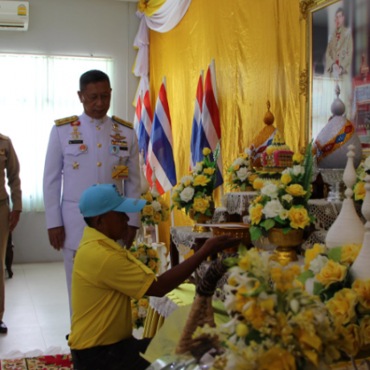

-
เว็บไซต์นี้จัดทำขึ้นเพื่อเป็นการทดสอบ พระกรุณาธิคุณ 
สมเด็จพระเจ้าอยู่หัว ทรงพระกรุณาโปรดเกล้า ฯ ให้จัดตั้งโรงครัวพระราชทาน เพื่อประกอบอาหารเลี้ยงประชาชนที่ได้รับความเดือดร้อน จากเหตุการณ์อุทกภัย โดยการดำเนินการใช้กำลังพลจากจากมณฑลทหารบกที่ 44 รวมถึงเจ้าหน้าที่และประชาชนจิตอาสาของจังหวัดชุมพร มาร่วมกันประกอบอาหาร แพ็คกล่องอาหารและน้ำดื่ม สำหรับนำไปแจกจ่ายให้กับประชาชนในพื้นที่ ที่ประสบอุทกภัย สร้างความปลี้มปีติให้กับประชาชนในจังหวัดชุมพรและต่างรู้สึกสำนึกในพระมหากรุณาธิคุณ อย่างหาที่สุดมิได้

สมเด็จพระเจ้าอยู่หัวมหาวชิราลงกรณ บดินทรเทพยวรางกูร ทรงพระกรุณาโปรดเกล้าโปรดกระหม่อม ให้พลตรีกัลย์สรรค์ จันทรเสน เชิญพระราชกระแสชมเชยและมอบกระเช้าพระราชทานที่ทำสาธารณประโยชน์ในพื้นที่อำเภอชนแดน โดยมิได้มุ่งหวังสิ่งใดตอบแทนโดยมี นายสืบศักดิ์ เอี่ยมวิจารณ์ ผู้ว่าราชการจังหวัดเพชรบูรณ์ กล่าวต้อนรับพร้อมด้วยหัวหน้าส่วนราชการ ประชาชนจิตอาสาเข้าร่วม
นายบุญยก เพ็ญนุ่น เป็นที่รู้จักกันในนาม เปี๊ยกถั่วงอก เกิดเมื่อวันที่ 14 กุมภาพันธ์ พ.ศ.2500 อาศัยอยู่บ้านเลขที่ 1010 หมู่ที่ 1 ตำบลท่าข้าม อำเภอชนแดน จังหวัดเพชรบูรณ์ ประกอบอาชีพเกษตรกรรมเพาะปลูกถั่วงอกนายบุญยก เพ็ญนุ่น ร่วมกิจกรรมจิตอาสามาอย่างต่อเนื่องตั้งแต่วันที่ 13 เดือน ตุลาคม พ.ศ. 2559 เพื่อถวายเป็นพระราชกุศลแด่พระบาทสมเด็จพระปรมินทรมหาภูมิพลอดุลยเดช บรมนาถบพิตร และเพื่อเทิดพระเกียรติสมเด็จพระเจ้าอยู่หัวมหาวชิราลงกรณ บดินทรเทพยวรางกูร ต่อมาได้สมัครเป็นจิตอาสาตามโครงการเราทำความดีด้วยหัวใจเพื่อทำสาธารณประโยชน์ในพื้นที่อำเภอชนแดน โดยหลังจากที่ นายบุญยก เพ็ญนุ่น นำถั่วงอกไปขายที่ตลาดจะกลับไปนำอุปกรณ์สำหรับทำความสะอาดออกมาถางหญ้าทำความสะอาดบริเวณสองข้างถนนนอกจากนี้ยังได้สละทรัพย์สินส่วนตัวซื้อวัสดุอุปกรณ์ซ่อมแซมถนนที่มีความชำรุดทรุดโทรมทั้งถนนสายหลัก และสายรองและตามซอยหมู่บ้านในพื้นที่อำเภอชนแดน เพื่อลดอุบัติเหตุจากการเดินทางของประชาชนทั่วไปและทำเป็นกิจวัตรประจำวันโดยมิได้มุ่งหวังสิ่งใดตอบแทนถือเป็นบุคคลที่มีจิตสาธารณะ และสมควรได้รับการยกย่องเป็นแบบอย่างที่ดีแก่ประชาชนโดยทั่วไปSUPAWIT SRIWISET
42/105 NAWAMIN ROAD 143 BUENGKUM BANGKOK 10240